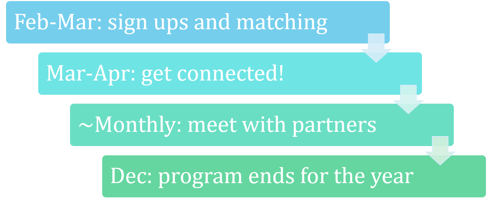
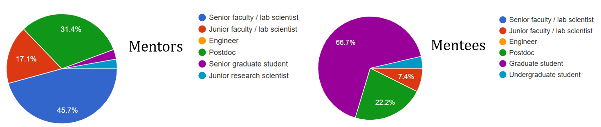

Mentorship
Mentorship Program
The U.S. CMS mentorship program was launched by the Diversity, Equity, and Inclusion committee in 2020. Each year, mentor-mentee pairings are made based on demographic information (location, career position, optional identity groups) as well as the type of mentoring relationship desired. Both mentees and mentors are asked which types of mentorship they are seeking or wish to provide, such as career advancement or growth, relocation to or life at CERN, allyship for minority identity groups, and generally making a new connection within CMS. Mentors and mentees are purposefully paired outside their own institutions to promote networking and community building. Resources for mentors and mentees, including discussion topics to foster meaningful communication, are provided on a Twiki page.
Each year, the program begins with calls for sign-ups, followed by the matching procedure. A kick-off meeting is held to host the first connection between new mentors and mentees. Monthly meetings are then encouraged for all partners by email. In December the annual program ends, at which point participants can continue their connections or step back if needed.

Since 2020 several mentor-mentee pairs have continued their connections, others have engaged with new partners each year to build their network, and new participants have joined. Mentees are primarily graduate students and mentors are primarily faculty members or lab scientists, but the program also benefits from peer mentoring of new students by older students and postdocs, and of junior faculty by senior faculty.

The committee plans to continue this program in the future and include in-person activities at U.S. CMS meetings as well as mentee- or mentor-specific meet-ups to build community between program participants. The mentorship program coordinators within the DEI committee can be contacted at uscms-mentorship@cern.ch.